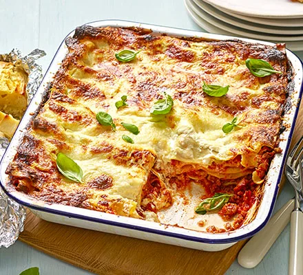

Uninspired Lasagna

Ingredients
Sauce
- 1 large onion, roughly chopped
- 4 cloves garlic, finely chopped
- 2 Cans chopped tomatoes
- 1 Carrot
- 400ml crème fraîche
- 1 tbsp oregano
- 1 bunch of basil
- 2 bay leaves
- 2 large tomatoes, roughly chopped
- 700ml beef stock
- 1 kg beef mince
- 125g Mozzarella
Steps
- Heat the oil in a large saucepan. Use kitchen scissors to snip the bacon into small pieces, or use a sharp knife to chop it on a chopping board. Add the bacon to the pan and cook for just a few mins until starting to turn golden. Add the onion, celery and carrot, and cook over a medium heat for 5 mins, stirring occasionally, until softened.
- Add the garlic and cook for 1 min, then tip in the mince and cook, stirring and breaking it up with a wooden spoon, for about 6 mins until browned all over.
- Stir in the tomato purée and cook for 1 min, mixing in well with the beef and vegetables. Tip in the chopped tomatoes. Fill each can half full with water to rinse out any tomatoes left in the can, and add to the pan. Add the honey and season to taste. Simmer for 20 mins.
- Heat oven to 200C/180C fan/gas 6. To assemble the lasagne, ladle a little of the ragu sauce into the bottom of the roasting tin or casserole dish, spreading the sauce all over the base. Place 2 sheets of lasagne on top of the sauce overlapping to make it fit, then repeat with more sauce and another layer of pasta. Repeat with a further 2 layers of sauce and pasta, finishing with a layer of pasta.
- Put the crème fraîche in a bowl and mix with 2 tbsp water to loosen it and make a smooth pourable sauce. Pour this over the top of the pasta, then top with the mozzarella. Sprinkle Parmesan over the top and bake for 25–30 mins until golden and bubbling. Serve scattered with basil, if you like.